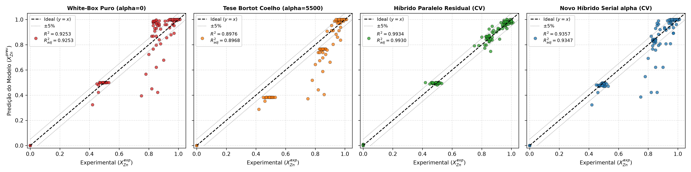
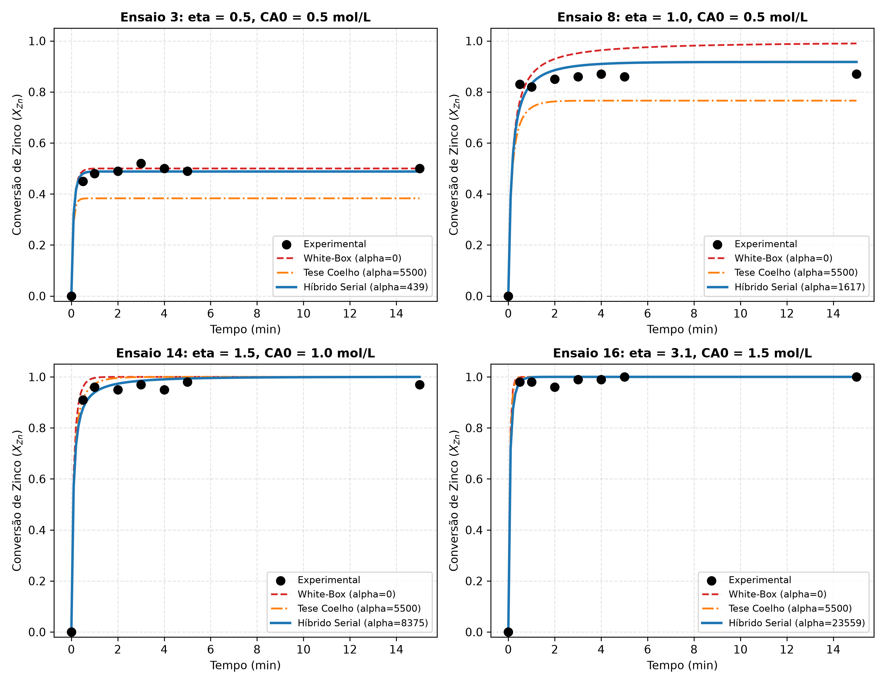
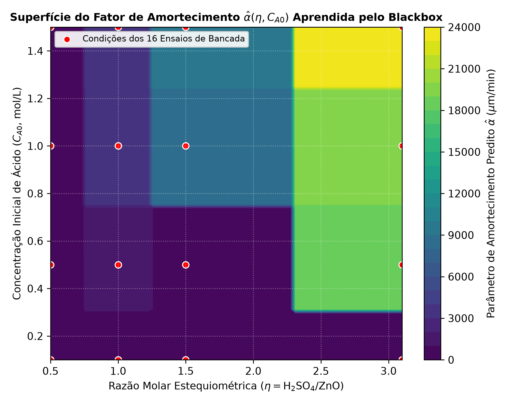

Modelagem Híbrida Serial (Grey-Box Cinético):
Estimação Inteligente de $\alpha$ & Acoplamento White-Box
Superação da constante empírica da tese de 2017 através de Inteligência Artificial acoplada diretamente à equação de conservação diferencial do Balanço Populacional (PBM).
O Paradoxo de $\alpha$ Constante na Tese de 2017
Na dissertação do Prof. Fabrício Bortot Coelho (2017), a desaceleração provocada pelo acúmulo de sulfato e passivação foi modelada pela taxa de encolhimento de partícula:
Arquitetura Híbrida Serial: Fluxo de Predição
O modelo Machine Learning calcula inicialmente o parâmetro $\hat{\alpha}$ a partir das condições operacionais, injetando-o diretamente na equação diferencial do White-Box PBM.
- Monotonicidade 100% Nativa: Como $v(t) \ge 0$, $\Delta D(t)$ cresce monotonicamente, tornando impossível prever $dX/dt < 0$.
- Respeito Estequiométrico Estrito: Quando $\eta < 1$, o ácido zera no PBM e a conversão trava exatamente em $\eta$.
- Portabilidade para CSTRs Contínuos: Pode ser incorporado diretamente na equação algébrica dos 3 CSTRs em cascata da planta piloto.
Simulador Interativo do Fator $\hat{\alpha}(\eta, C_{A0})$
Arraste os controles para testar como o modelo Black-Box inteligente adapta a intensidade de amortecimento de acordo com a janela operacional:
Confronto de Modelos: $R^2$, $R^2_{\text{ajustado}}$ & Erro
Comparação nos 128 pontos experimentais de bancada com validação cruzada estrita Leave-One-Group-Out (LOGO-CV):
| Arquitetura / Modelo | Tipo | Params ($p$) | $R^2$ Ajuste | $R^2_{\text{ajustado}}$ Ajuste | $R^2$ LOGO-CV | $R^2_{\text{ajustado}}$ LOGO-CV | $RMSE_{\text{CV}}$ | Monotonicidade |
|---|---|---|---|---|---|---|---|---|
| Híbrido Paralelo Residual (GBDT) | Grey-Box Paralelo | 6 | 0,9987 | 0,9987 | 0,9934 | 0,9930 | 0,0264 | Filtro np.maximum |
| Novo Híbrido Serial (alpha-PolyRidge) | Grey-Box Serial | 2 | 0,9438 | 0,9429 | 0,9387 | 0,9378 | 0,0802 | 100% Nativa |
| Novo Híbrido Serial (alpha-GBDT) | Grey-Box Serial | 2 | 0,9474 | 0,9465 | 0,9357 | 0,9347 | 0,0822 | 100% Nativa |
| White-Box Puro ($\alpha = 0$) | Mecanicista | 0 | 0,9253 | 0,9253 | 0,9253 | 0,9253 | 0,0886 | 100% Nativa |
| Tese Bortot Coelho (2017) ($\alpha = 5500$) | Cinética Empírica | 1 | 0,8976 | 0,8968 | 0,8976 | 0,8968 | 0,1037 | 100% Nativa |
Gráficos de Validação Científica
Clique em qualquer imagem para abrir em tela cheia com visualização detalhada:



Conclusões & Contribuições Acadêmicas
Principais avanços estabelecidos pela Arquitetura Híbrida Serial no TCC de Engenharia Química: